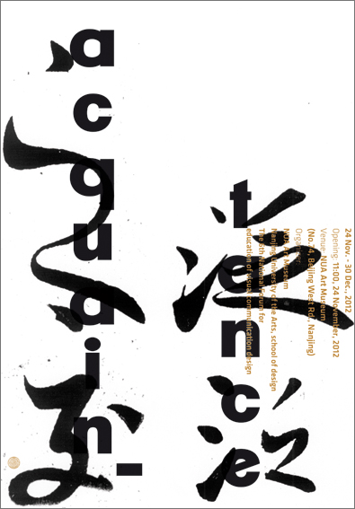

Acquaintance Measures: A0 Technique: Offset Place and date: Berlin, 2012 Client: Jianping He's solo exhibition-"acquaintance" for the Centennial Celebration of Nanjing University of the Arts in Nanjing.
